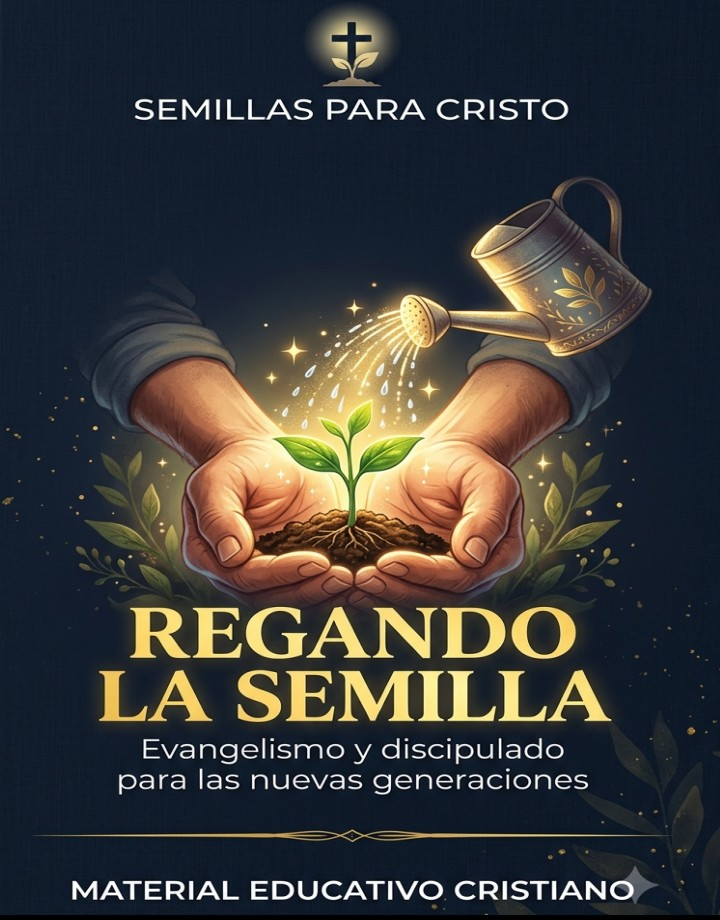

Materiales bíblicos y educativos para sembrar la Palabra en el hogar, la escuela dominical y la vida diaria.
Pocos artículos, cuidadosamente seleccionados. Escríbenos si buscas algo que no ves aquí.
Guía práctica para maestros que inspiran y transforman corazones.
Para agradecerte por seguirnos y confiar en nuestro ministerio, te obsequiamos este recurso exclusivo. Sin trucos, sin suscripciones ocultas — solo queremos bendecir tu ministerio.
"Así que ni el que planta es algo, ni el que riega, sino Dios, que da el crecimiento." (1 Corintios 3:7)
🔗 Archivo alojado en Google Drive. Descarga inmediata sin registro.
Este recurso es un regalo de bienvenida. Puedes compartirlo con otros maestros, pero no se permite su venta ni reproducción masiva sin autorización.
📧 ricardobarbara588@gmail.com

Actividades, dibujos para colorear y versículos clave, pensado para escuela dominical.